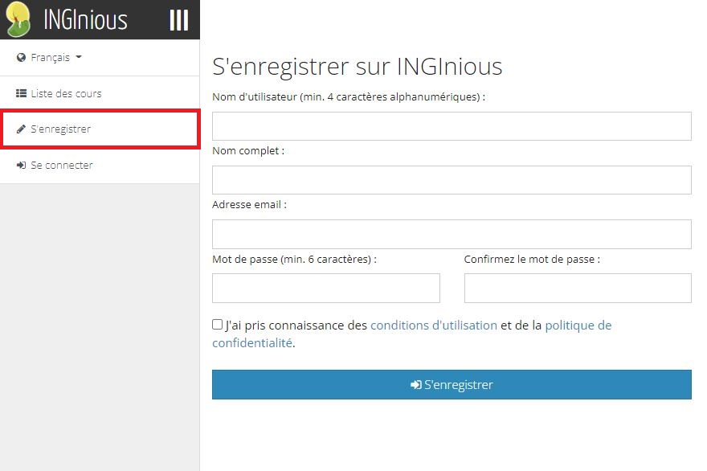
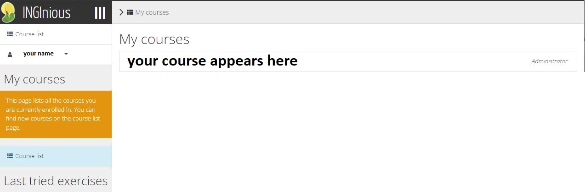
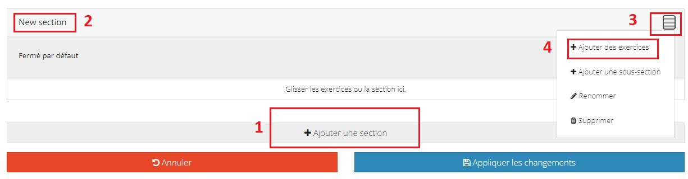
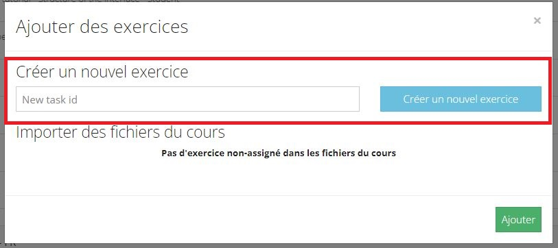

How to create a task on INGInious step by step¶
This part of the tutorial will explain step by step how to create a task on INGInious.
- You need to have an INGInious account, to do so, click on Register, you will be directed to this page, fill out the form and click on Sign up :

- With your account, you need to be logged in, you can do by pressing Sign in then fill up the form with your informations :

- You need to have a course, if you haven’t requested one to be created for you yet, please contact this address : contact@inginious.org
- When you’re logged in and have a course, you need to go to this page https://inginious.org/mycourses your course should appear here.

- Click on the course name, it should be empty.
- Click on “Course administration”.

- You can change the name of your course here, give it a description and the accessibility if you want people to see your course. The course is only visible and accessible by you by default.
- Click on “Tasks”.

- Click “Add section” (1) and give it a name (2).
- Download the files here : TODO add link to git
- Unzip the files.
- Put everything inside your course folder. Path : YourCourse/here.
- TODO -> There will be an easy access to your course’s folder (through webdav), TBD.
- Click on the three (3) lines then click “Add tasks”(4).

- Give your new task an ID, under “Import from course filesystem” you should see a folder named “Maze Tutorial Task”, click on it, then click “Add”. TODO change this line based on what system has been made available for the teachers to reach the webdav

- Click “Save changes”
- You have successfully created a maze task !